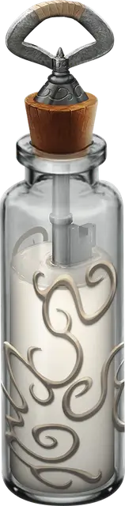

Универсальный растворитель
Universal Solvent
Чудесный предмет, легендарный

Рекомендованная стоимость от 25 001 зм
В этом тюбике находится молочно-белая жидкость с сильным запахом спирта. Вы можете действием вылить содержимое тюбика на поверхность в пределах досягаемости. Она мгновенно растворяет до 1 квадратного фута клейкой субстанции, которой касается, включая превосходный клей [sovereign glue].